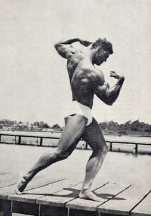

Tuskaa ja tuloksia
 Vasemmalla oleva kuva on esimerkki perinteisestä kehonrakentajan fysiikasta. Jokaisen kehonosan tulee olla suhteessa ja hyvässä kunnossa, jotta kokonaisuus näyttää miellyttävältä – eli "esteettiseltä".Kehonrakennus on laji, joka vaatii uhrauksia. Tie kohti suuruutta ei ole helppo. Jotta voit todella maksimoida potentiaalisi, sinun on omistettava vuosia elämästäsi kovalle työlle.
Kova työ tässä yhteydessä tarkoittaa lihasten harjoittamista 3–5 kertaa viikossa, tasapainoista ruokavaliota, hyvää unta ja lepoa, itsensä kouluttamista kirjojen ja internetin avulla, sekä tärkeimpänä kaikista: itsesi tutkimista.
Voitokkaana pysyminen
On monta hetkeä elämässä, kun kaikki tuntuu kaatuvan päälle samanaikaisesti. Sinusta voi tuntua, että laiminlyöt tärkeitä asioita elämässäsi. Kasaantuneet koulutyöt, kariutuva parisuhde, yksinäisyys, työstä aiheutuva uupumus, itselleen kelpaamattomuus. Me ihmisinä käymme näytä asioita läpi omalla tavallamme.
Näen nämä tunteet pakollisina kehityksen hetkinä. Tunteesi ja kokemuksesi on lähtöisin sinusta. Sinä olet tärkein asia tässä maailmassa. Pidä itsestäsi huoli, tee palveluksia itsellesi. Ole hyvä ystävä itsellesi, näe vaivaa itsesi eteen! Jos onnistut siinä, itsesi parantaminen on jo puoliksi tehty.
Itse olen löytänyt suurimman motivaation treenaamiseen surun kautta. Kanavoin ahdistustani ja huonoja tunteita käyttämällä niitä energiana ja hyödyntämällä sitä lihasharjoituksissani. Minun suruni on tehnyt minusta vahvemman henkilön, enkä halua viettää aikaa säälien itseäni. En ole löytänyt sellaisesta mitään apua, vaikka se on osa prosessiani parantua.